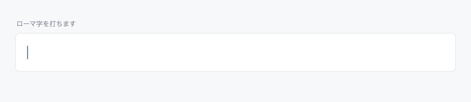

RomanJapanese input method (IME) for macOS — latest 1.03
Roman is a Japanese input method for macOS that brings an LLM (large language model) into kana-kanji conversion. Type romaji continuously and you get kanji-kana text that fits the context. Conversion, learning and inference all run on your own Mac.

No conversion key
keystrokes nihongonyuuryokuhakawaru
│
│ while typing
▼
kana にほんごにゅうりょくはかわる
│
│ when typing pauses
▼
converted 日本語入力は変わる
Roman is a form of live conversion — it follows your typing without a conversion key — but it does not commit text as you type. Instead it uses the pauses between keystrokes as the moment to convert. Candidates come from dictionaries, are judged by AI, and are combined with what Roman has learned from you.
Five characteristics
- No conversion key Pause briefly and the text converts by itself; keep typing and it commits by itself. The space key is only for looking at other candidates.
- Stays out of your way The display does not jump around while you are typing or correcting, so you can keep writing.
- Reads the context AI uses the surrounding text to decide between homophones and wordings.
- Learns your hand The candidates you choose are learned automatically and preferred next time. Typing habits and mistakes are learned too, and used for correction.
- Entirely on your Mac Conversion, learning and AI inference are all local. What you type is never sent to the internet.
Download
Get the latest release (GitHub)
The package (pkg) is about 185 MB. On first install it downloads about 6.7 GB of language models (the installer asks before downloading). Expect 15–60 minutes depending on your connection.
Documentation is in Japanese: installation guide and user manual.
Requirements
| CPU | Apple Silicon Mac (AI runs locally; Intel Macs are not supported) Recommended: M4 or newer |
|---|---|
| Memory | 16 GB or more (the conversion AI resides in memory, about 5 GB) Recommended: 24 GB or more |
| Storage | About 10 GB free (0.4 GB for the app, 6.7 GB for models and runtimes, plus working space) |
| OS | macOS 14 or later |
Privacy
Conversion, learning and AI inference all happen on your Mac. What you type is never sent to the internet.
Roman uses the network in only two situations:
- Downloading the language models during installation, from their official distribution sites (once only)
- The monthly check for a new version, if you turn it on (off by default)
Feedback
Bug reports, conversion-quality reports and feature requests are welcome on GitHub. For a conversion problem, please include the keystrokes you typed and the text you expected.